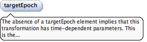

A terrestrial reference frame is a geodetic reference frame (or geodetic datum in previous GML parlance) in which the coordinates of reference or definition monuments are allowed to move. In essence, a terrestrial reference frame is continuously "realised" with the regular addition of new observations on a weekly or daily time scale. To use a terrestrial reference frame, up-to-date transformation products must be available to propagate coordinates and their uncertanties between epochs and between frames.To derive a static reference frame (a GML datum) from a terrestrial reference frame and a dynamic transformation, the source and target epochs of the dynamic transformation are required to compute coordinates in the realisation epoch of the static reference frame.
<element name="TerrestrialReferenceFrame" type="geo:TerrestrialReferenceFrameType" substitutionGroup="gml:GeodeticDatum"><annotation><documentation>A terrestrial reference frame is a geodetic reference frame (or geodetic datum in previous GML parlance) in which the coordinates of reference or definition monuments are allowed to move. In essence, a terrestrial reference frame is continuously "realised" with the regular addition of new observations on a weekly or daily time scale. To use a terrestrial reference frame, up-to-date transformation products must be available to propagate coordinates and their uncertanties between epochs and between frames. To derive a static reference frame (a GML datum) from a terrestrial reference frame and a dynamic transformation, the source and target epochs of the dynamic transformation are required to compute coordinates in the realisation epoch of the static reference frame.</documentation></annotation></element>
A dynamic transformation is a coordinate transformation between reference frames where at least one of which is a dynamic or terrestrial reference frame. To derive a static reference frame (a GML datum) from a terrestrial reference frame and a dynamic transformation, either the source and target epochs OR the source epoch and a relative time quantity parameter of the dynamic transformation are required to compute coordinates in the realisation epoch of the static reference frame.A transformation between reference frames in the static sense requires no temporal parameters. That is, a static reference frame (SRF) such as GDA94 can be transformed to another SRF like AGD66 with seven spatial parameters and no temporal parameters. In contrast, a dynamic reference frame (DRF) such as ITRF2008 (or the upcoming ITRF2014) requires temporal parameters to be transformed to a SRF and vice versa, and this results in the 14-parameter transformation comprised of 7 spatial and 7 temporal-spatial parameters. A fundamental requirement of the 14-parameter transformation is the provision of a time vector relative to the realisation epoch of the dynamic frame. See Dawson & Woods (2010).
<element name="DynamicTransformation" type="geo:DynamicTransformationType" substitutionGroup="gml:AbstractGeneralTransformation"><annotation><documentation>A dynamic transformation is a coordinate transformation between reference frames where at least one of which is a dynamic or terrestrial reference frame. To derive a static reference frame (a GML datum) from a terrestrial reference frame and a dynamic transformation, either the source and target epochs OR the source epoch and a relative time quantity parameter of the dynamic transformation are required to compute coordinates in the realisation epoch of the static reference frame. A transformation between reference frames in the static sense requires no temporal parameters. That is, a static reference frame (SRF) such as GDA94 can be transformed to another SRF like AGD66 with seven spatial parameters and no temporal parameters. In contrast, a dynamic reference frame (DRF) such as ITRF2008 (or the upcoming ITRF2014) requires temporal parameters to be transformed to a SRF and vice versa, and this results in the 14-parameter transformation comprised of 7 spatial and 7 temporal-spatial parameters. A fundamental requirement of the 14-parameter transformation is the provision of a time vector relative to the realisation epoch of the dynamic frame. See Dawson & Woods (2010).</documentation></annotation></element>
The absence of a targetEpoch element implies that this transformation has time-dependent parameters. This is the standard configuration of a 14-parameter transformation whereby the latter 7 parameters are coefficients to a time parameter. A residual velocity map would also implicitly have time-dependent parameters. An example of a dynamic transformation that requires a targetEpoch is a 7-parameter transformation (implying no time-dependent parameters) between two dynamic frames, e.g. ITRF2014 to ITRF2008 at epochs 2014-01-01 and 2008-01-01 respectively.
Diagram

Type
TimePositionType
Properties
content
simple
minOccurs
0
Source
<element name="targetEpoch" type="gml:TimePositionType" minOccurs="0"><annotation><documentation>The absence of a targetEpoch element implies that this transformation has time-dependent parameters. This is the standard configuration of a 14-parameter transformation whereby the latter 7 parameters are coefficients to a time parameter. A residual velocity map would also implicitly have time-dependent parameters. An example of a dynamic transformation that requires a targetEpoch is a 7-parameter transformation (implying no time-dependent parameters) between two dynamic frames, e.g. ITRF2014 to ITRF2008 at epochs 2014-01-01 and 2008-01-01 respectively.</documentation></annotation></element>
<element name="source" type="geo:AbstractDefinitionSourcePropertyType" minOccurs="0" maxOccurs="unbounded"><annotation><documentation>An unbounded list of references to the source of each parameter.</documentation></annotation></element>
A gridded transformation can be either (1) an absolute deformation model between two defined epochs, or (2) a time-relative transformation such as a velocity map or residual velocity map transformation. A residual linear velocity map is often defined in conjunction with an optional Euler-pole 3-parameter transformation. The application of velocity map transformations require propagation of the initial coordinates to the sourceEpoch of the transformation to derive the appropriate linear velocity vector and uncertainty for that point to be propagated to the target epoch. The target epoch is not specified in a velocity map definition, instead the derived velocity is a time-dependent parameter which can be used to propagate the point to any desired epoch.
<element name="GridTransformation" type="geo:GridTransformationType" substitutionGroup="geo:DynamicTransformation"><annotation><documentation>A gridded transformation can be either (1) an absolute deformation model between two defined epochs, or (2) a time-relative transformation such as a velocity map or residual velocity map transformation. A residual linear velocity map is often defined in conjunction with an optional Euler-pole 3-parameter transformation. The application of velocity map transformations require propagation of the initial coordinates to the sourceEpoch of the transformation to derive the appropriate linear velocity vector and uncertainty for that point to be propagated to the target epoch. The target epoch is not specified in a velocity map definition, instead the derived velocity is a time-dependent parameter which can be used to propagate the point to any desired epoch.</documentation></annotation></element>
A deformation grid transformation is an in-frame transformation i.e. sourceCRS and targetCRS are the same. The targetEpoch element is required. Deformation defines an absolute transformation, that is, one that does not have time-dependent parameters. It is often called a patch-model when used in scenarios where deformation has occurred due to an earthquake.
<element name="DeformationGridTransformation" type="geo:DeformationGridTransformationType" substitutionGroup="geo:GridTransformation"><annotation><documentation>A deformation grid transformation is an in-frame transformation i.e. sourceCRS and targetCRS are the same. The targetEpoch element is required. Deformation defines an absolute transformation, that is, one that does not have time-dependent parameters. It is often called a patch-model when used in scenarios where deformation has occurred due to an earthquake.</documentation></annotation></element>
<element name="source" type="geo:AbstractDefinitionSourcePropertyType" minOccurs="0" maxOccurs="unbounded"><annotation><documentation>An unbounded list of references to the source of each parameter.</documentation></annotation></element>
<element name="InterpolatedSingleValue" type="geo:InterpolatedSingleValueType" substitutionGroup="geo:AbstractTimeSlice"><annotation><documentation>The result of an interpolation operation on a gridded transformation or geoid.</documentation></annotation></element>
<element name="InterpolatedDynamicValue" type="geo:InterpolatedDynamicValueType" substitutionGroup="gml:AbstractFeature"><annotation><documentation>The time-series result of interpolation operations on a gridded transformation or geoid over a time period.</documentation></annotation></element>
<complexType name="DynamicTransformationType"><complexContent><extension base="gml:AbstractGeneralTransformationType"><sequence><element name="sourceEpoch" type="gml:TimePositionType"/><element name="targetEpoch" type="gml:TimePositionType" minOccurs="0"><annotation><documentation>The absence of a targetEpoch element implies that this transformation has time-dependent parameters. This is the standard configuration of a 14-parameter transformation whereby the latter 7 parameters are coefficients to a time parameter. A residual velocity map would also implicitly have time-dependent parameters. An example of a dynamic transformation that requires a targetEpoch is a 7-parameter transformation (implying no time-dependent parameters) between two dynamic frames, e.g. ITRF2014 to ITRF2008 at epochs 2014-01-01 and 2008-01-01 respectively.</documentation></annotation></element><element name="usesMethod" type="gml:OperationMethodType"/><element ref="gml:parameterValue" minOccurs="0" maxOccurs="unbounded"/><element name="source" type="geo:AbstractDefinitionSourcePropertyType" minOccurs="0" maxOccurs="unbounded"><annotation><documentation>An unbounded list of references to the source of each parameter.</documentation></annotation></element></sequence></extension></complexContent></complexType>